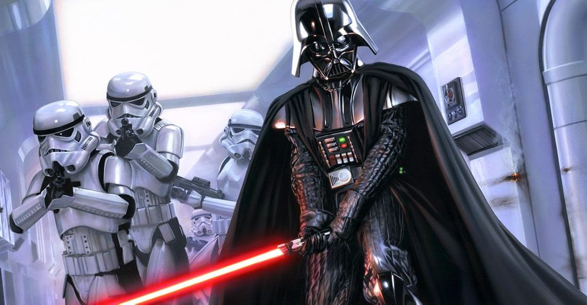

특징
다스 베이더는 항상 듀라스틸로 이루어진 갑옷을 착용하고 있으며, 그의 얼굴 역시 언제나 가면을 쓴 채로 가려져 있다.
그는 본래 오비완 케노비의 제자였던 젊은 제다이 기사였으나, 다스 시디어스의 현혹에 넘어가 시스로 타락해버렸다. 이후 시디어스가 황제로 군림한 은하 제국에서 제다이를 학살하는데 일조했던 다스 베이더는 다시 만난 옛 스승과의 결전에서 패한 뒤 자신의 푸른 라이트세이버를 빼앗기자, 새로이 제작한 붉은색 라이트세이버를 사용하고 있다.
스타워즈가 태동하던 스타워즈 오리지널 시리즈 당시의 다스 베이더 분장은 사실 행동을 많이 제약하는 형태였는데, 이 때문에 여러가지 화려한 액션을 마음껏 선보일 수 있었던 다른 제다이들과는 달리 다스 베이더의 전투는 매우 제한된 액션만을 사용할 수 있었다. 그런데 의외로 이러한 절제된 액션이 품격과 위엄을 상징하게 되어 다스 베이더라는 캐릭터의 매력을 더 잘 살렸다는 평을 받게 된다.